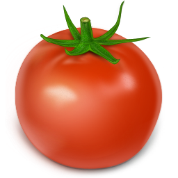
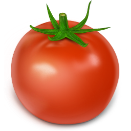

A potager is a French term for an ornamental vegetable or kitchen garden. Often flowers (edible and non-edible) and herbs are planted with the vegetables to enhance the garden's beauty. The goal is to make the function of providing food aesthetically pleasing.
Um potager é um termo em francês para um vegetal ornamental ou um jardim/horta de cozinha. Frequentemente as flores (comestíveis e não comestíveis) e as ervas são plantadas com os vegetais para melhorar a beleza do jardim. O objetivo é fornecer os alimentos agradáveis esteticamente.

Plants are chosen as much for their functionality as for their color and form. Many are trained to grow upward. A well-designed potager can provide food, cut flowers and herbs for the home with very little maintenance. Potagers can disguise their function of providing for a home in a wide array of forms - from the carefree style of the cottage garden to the formality of a knot garden.
As plantas são escolhidas tanto por sua funcionalidade quanto pela sua cor e forma. Muitos são treinados para crescer. Um potador bem projetado pode fornecer alimentos, flores cortadas e ervas para a casa com muito pouca manutenção. Os potadores podem disfarçar sua função de fornecer um lar numa ampla variedade de formas - desde o estilo despreocupado do jardim da casa de campo à formalidade de um jardim de nós.
 
